Accurate and cost-effective quantum dynamics
Max Saller

Quantum Dynamics
The study of systems which behave quantum mechanically and are dynamical in time.
Dynamics & Quantum Mechanics
Molecular Dynamics
- Evolve system in time by integrating classical equations of motion: $$\dot{q} = \frac{\partial H}{\partial p} \qquad \dot{p} = -\frac{\partial H}{\partial x}$$
- Linear scaling with system size
- Calculate static properties by solving the time-independent Schrödinger equation:$$\hat{H} \Psi = E \Psi\vphantom{-\frac{\partial V}{\partial x}}$$
-
Non-linear scaling with system size:
DFT O(n3), MP2 O(n5), CCSD(T) O(n7)
Quantum Dynamics
- Breakdown of Born-Oppenheimer approximantion
-
Required to simulate dynamical observables:
- Spectroscopic properties
- Rates of reaction
- Mechanisms of reaction
- Formally goverened by the time-dependent Schrödinger equation:$$i\hbar \frac{\partial}{\partial t} \Psi(t) = \hat{H} \Psi(t)$$
- Exponential scaling with system size
Exponential Scaling
"The Curse of Dimensionality"- 104 - 105 atoms
- 3N-6 degrees of freedom
- Photosynthetic process takes ms to s
- Nonadiabatic effects occur on fs timescale
- With "exact" methods (MCTDH):
Not enough atoms in the universe (~1080) for memory! - Forgetting about memory:
"Universe CPU" + lifetime of the universe... - Still not enough time!
Approximate Quantum Dynamics
Molecular Dynamics
- Evolve system in time by integrating classical equations of motion: $$\dot{q} = \frac{\partial H}{\partial p} \qquad \dot{p} = -\frac{\partial V}{\partial q}$$
- Linear scaling with system size
Trajectories
Quantum Probabilities
QM and trajectories: not a great match
Continuous phase space $(q,p)$
Discrete electronic states $(\ket{\alpha},\ket{\beta})$
Mapping onto a single space
- Each electronic state $\mapsto$ 1D Harmonic Oscillator
- If the state is populated $\mapsto$ 1st excited state
- If the state is not populated $\mapsto$ Ground state
- Each SEO has a set of mapping variables (X,P)
- Which are the HO position and momentum
- NOT the electronic position and momentum
Quantum Probabilities via Correlation Functions
Equations of motion
Semiclassical Mapping Dynamics
Sampling and Trajectories
Semiclassical Mapping Dynamics
Sampling and Trajectories
Mapping methods
Mean Field (Ehrenfest)
PBME (LSC I) LSC-IVR (LSC II)
mLSC Windowing (SQC)
Spin Mapping
FBTS PLDM
MACS, A. Kelly and J. Richardson, J. Chem. Phys., 150, 071101 (2019)
MACS, A. Kelly and J. Richardson, Farad. Discus., 221, 150-167 (2020)
Improving Mapping
Traditional Mapping FOR A SIMPLE BENCHMARK
Target for improvement: populations
Improved Mapping: Traceless operators
Improved Mapping: Traceless operators 2
Improved Mapping: Traceless operators 2
Improved Mapping: Traceless operators 2
Application: FMO
Fenna-Matthews-Olson Complex
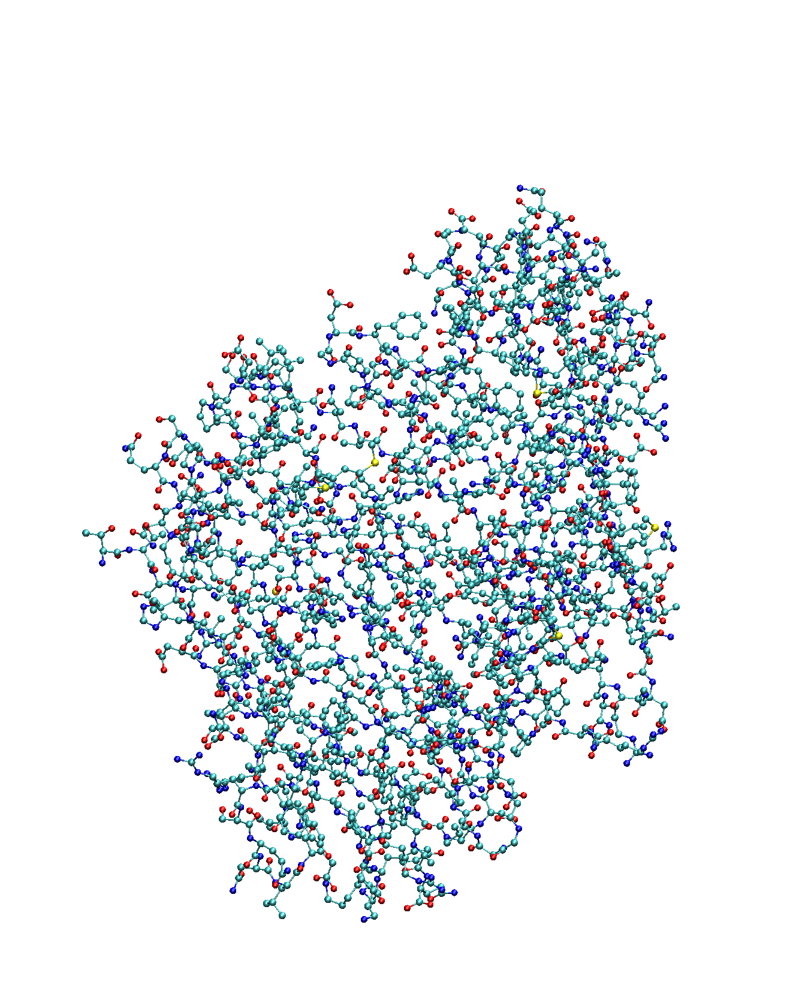- 420 nuclear degrees of freedom (HO to model protein environment)
- 7 electronic "states" (bacteriochlorophyll sites)
- Near 100% efficient excitation transfer
Fenna-Matthews-Olson Complex
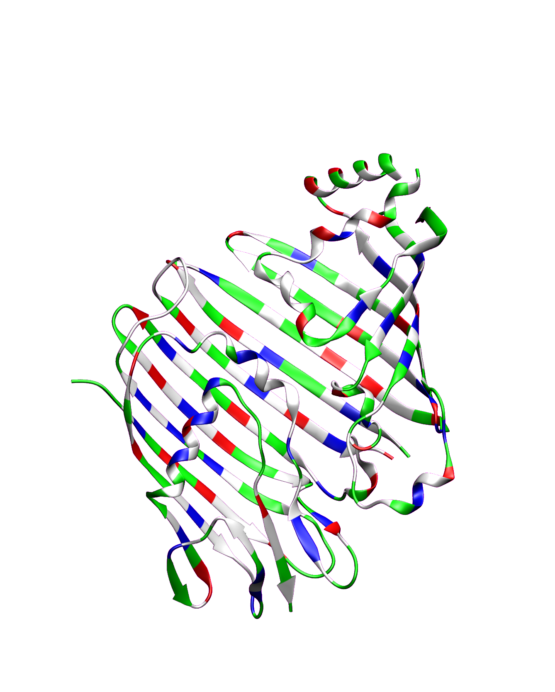- 420 nuclear degrees of freedom (HO to model protein environment)
- 7 electronic "states" (bacteriochlorophyll sites)
- Near 100% efficient excitation transfer
Fenna-Matthews-Olson Complex
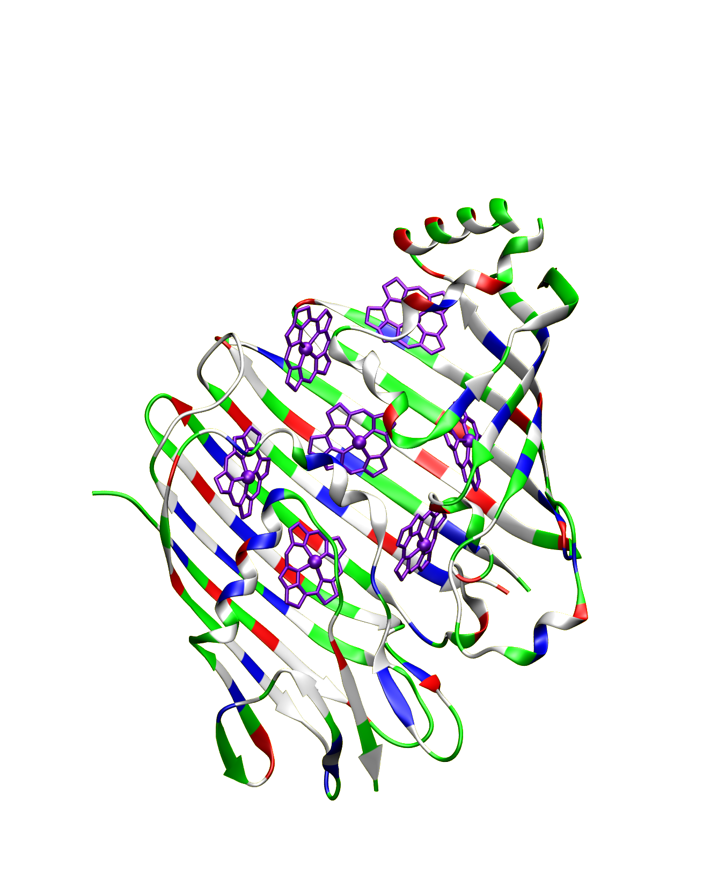- 420 nuclear degrees of freedom (HO to model protein environment)
- 7 electronic "states" (bacteriochlorophyll sites)
- Near 100% efficient excitation transfer
Fenna-Matthews-Olson Complex
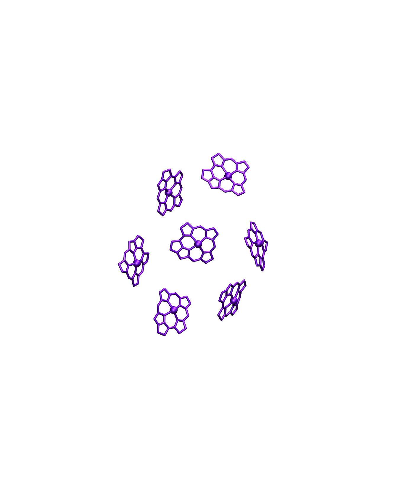- 420 nuclear degrees of freedom (HO to model protein environment)
- 7 electronic "states" (bacteriochlorophyll sites)
- Near 100% efficient excitation transfer
FMO Results
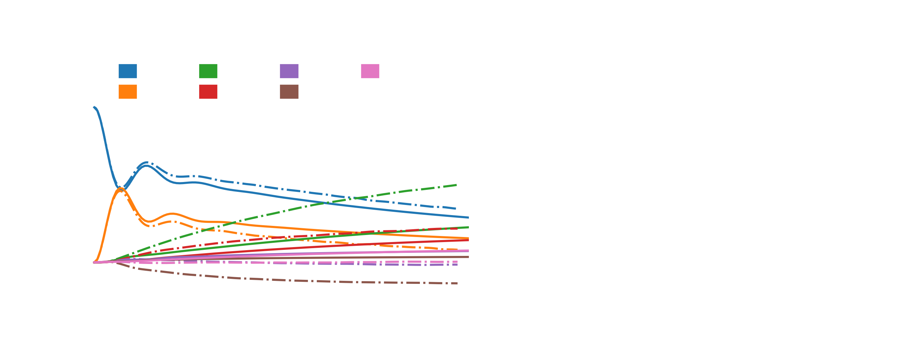 MACS, A. Kelly and J. Richardson, Farad. Discus., 221, 150-167 (2020)FMO Results
MACS, A. Kelly and J. Richardson, Farad. Discus., 221, 150-167 (2020)FMO Results
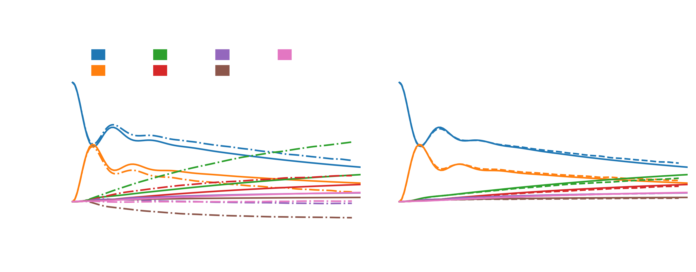 MACS, A. Kelly and J. Richardson, Farad. Discus., 221, 150-167 (2020)FMO Results
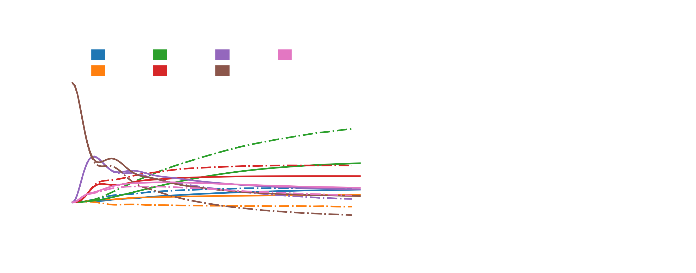 MACS, A. Kelly and J. Richardson, Farad. Discus., 221, 150-167 (2020)FMO Results
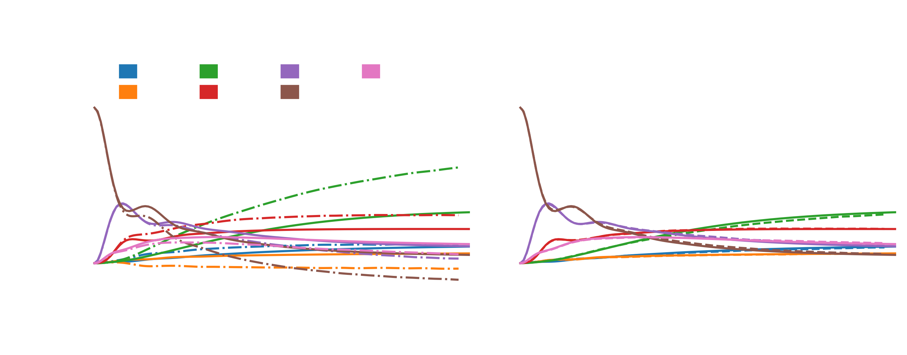 MACS, A. Kelly and J. Richardson, Farad. Discus., 221, 150-167 (2020)FMO Results
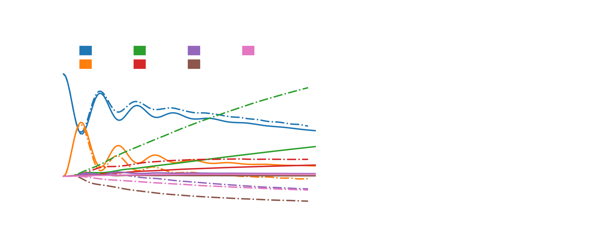 MACS, A. Kelly and J. Richardson, Farad. Discus., 221, 150-167 (2020)FMO Results
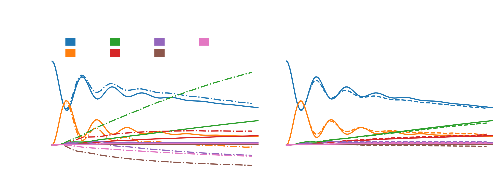 MACS, A. Kelly and J. Richardson, Farad. Discus., 221, 150-167 (2020)FMO Results
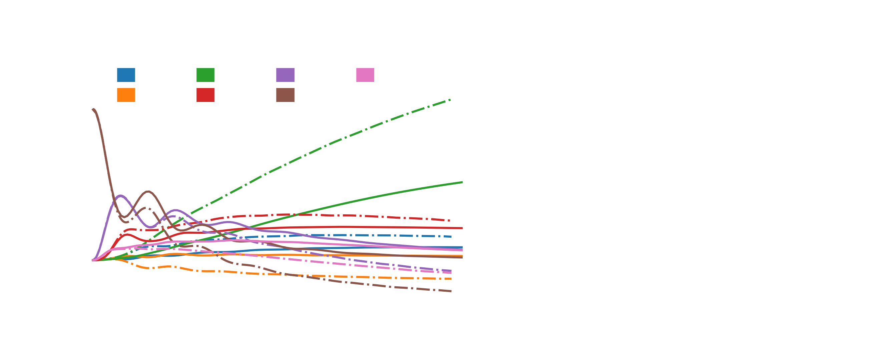 MACS, A. Kelly and J. Richardson, Farad. Discus., 221, 150-167 (2020)FMO Results
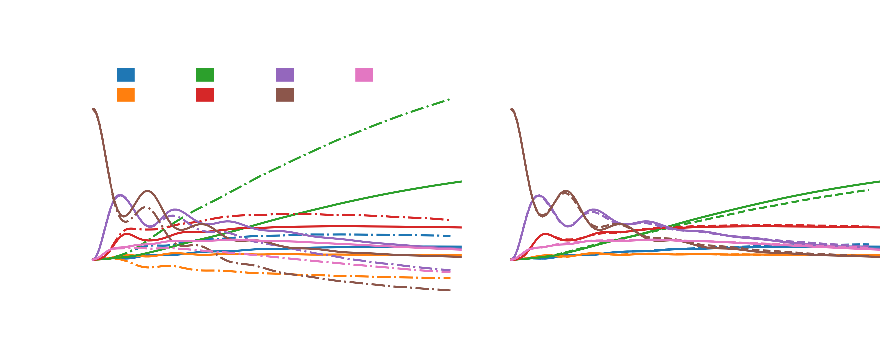 MACS, A. Kelly and J. Richardson, Farad. Discus., 221, 150-167 (2020)FMO Conclusions
- Traditional mapping underperforms for the FMO benchmark
- Improved operators completely address this at no extra cost
- This gives us a linearly scaling and accurate method for studying nonadiabatic dynamics at biological scale
Application: Cavities
Ebbesen et al., Phys. Rev. Lett., 106, 196405 (2011)
Ebbesen et al., Angw. Chem., 51, 1592-1596 (2012)
Ebbesen et al., Chem. Phys. Chem., 14, 125-131 (2013)
Simple Matter - Hard Cavity
Simple Matter - Hard Cavity
+
a 3-level version
Simple Matter - Hard Cavity
Simple Matter - Hard Cavity
2-level system
MACS, A. Kelly and E. Geva, J. Chem. Phys. Lett., 12, 3163-3170 (2021)
Simple Matter - Hard Cavity
3-level system
MACS, A. Kelly and E. Geva, J. Chem. Phys. Lett., 12, 3163-3170 (2021)
Hard Matter - Simple Cavity
Hard Matter - Simple Cavity
Hard Matter - Simple Cavity
Hard Matter - Simple Cavity
Hard Matter - Simple Cavity
LSC + FGR can give exact results
MACS, Y. Lai and E. Geva, J. Chem. Phys. Lett., 13, 2330-2337 (2022)
Separability of cavity modes
- Use the same factorisation approach as mLSC
- Cavity modes and nuclear modes are usually not coupled directly
- Split observables into cavity-free terms and analytical cavity terms
- Compute cavity-modified rates without simulating cavity modes
- Applicable to single and multiple mode cavities
- Allows us to cheaply determine optimal cavity parameters
MACS, Y. Lai and E. Geva, J. Phys. Chem. C, 127, 3154-3164 (2023)
MACS, Y. Lai and E. Geva, J. Chem. Phys., submitted (2023)
Cavity Conclusions
- Improved operators again outperform traditional mapping for cavities
- Mapping can be used to calculate exact FGR rates of reaction
- The mLSC separation can in fact be used to compute cavity-modified dynamics without ever having to simulate the cavity modes
Branching Out
On-the-fly dynamics
- Evolve system in time by integrating classical equations of motion: $$\dot{q} = \frac{\partial H}{\partial p} \qquad \dot{p} = -\frac{\partial H}{\partial x}$$
- Linear scaling with system size
- Calculate static properties by solving the time-independent Schrödinger equation:$$\hat{H} \Psi = E \Psi\vphantom{-\frac{\partial V}{\partial x}}$$
-
Non-linear scaling with system size:
DFT O(n3), MP2 O(n5), CCSD(T) O(n7)
$$\dot{q} = \frac{\partial H}{\partial p} \qquad \dot{p} = -\frac{\partial U}{\partial q} - \frac{1}{2} \left[ X^\mathrm{T}\frac{\partial V}{\partial q}X + P^\mathrm{T}\frac{\partial V}{\partial q}P - Tr \frac{\partial V}{\partial q}\right]\qquad \dot{X} = \frac{1}{\hbar}VP \qquad \dot{P} = -\frac{1}{\hbar} V X$$
On-the-fly dynamics
- Evolve system in time by integrating classical equations of motion: $$\dot{q} = \frac{\partial H}{\partial p} \qquad \dot{p} = -\frac{\partial H}{\partial x}$$
- Linear scaling with system size
- Calculate static properties by solving the time-independent Schrödinger equation:$$\hat{H} \Psi = E \Psi\vphantom{-\frac{\partial V}{\partial x}}$$
-
Non-linear scaling with system size:
DFT O(n3), MP2 O(n5), CCSD(T) O(n7)
$$\dot{q} = \frac{\partial H}{\partial p} \qquad \dot{p} = -\frac{\partial U}{\partial q} - \frac{1}{2} \left[ X^\mathrm{T}\frac{\partial V}{\partial q}X + P^\mathrm{T}\frac{\partial V}{\partial q}P - Tr \frac{\partial V}{\partial q}\right]\qquad \dot{X} = \frac{1}{\hbar}VP \qquad \dot{P} = -\frac{1}{\hbar} V X$$
On-the-fly dynamics
- Evolve system in time by integrating classical equations of motion: $$\dot{q} = \frac{\partial H}{\partial p} \qquad \dot{p} = -\frac{\partial H}{\partial x}$$
- Linear scaling with system size
- Calculate static properties by solving the time-independent Schrödinger equation:$$\hat{H} \Psi = E \Psi\vphantom{-\frac{\partial V}{\partial x}}$$
-
Non-linear scaling with system size:
DFT O(n3), MP2 O(n5), CCSD(T) O(n7)
$$\dot{q} = \frac{\partial \textcolor{royalblue}{H}}{\partial p} \qquad \dot{p} = -\frac{\partial \textcolor{royalblue}{U}}{\partial q} - \frac{1}{2} \left[ X^\mathrm{T}\frac{\partial \textcolor{royalblue}{V}}{\partial q}X + P^\mathrm{T}\frac{\partial \textcolor{royalblue}{V}}{\partial q}P - Tr \frac{\partial \textcolor{royalblue}{V}}{\partial q}\right]\qquad \dot{X} = \frac{1}{\hbar}\textcolor{royalblue}{V}P \qquad \dot{P} = -\frac{1}{\hbar} \textcolor{royalblue}{V} X$$
Machine Learning
- Kernel Ridge Regression
- Gaussian Process Regression
Laude, Calderini, Tew, Richardson, Faraday Discuss., 212, 237-258 (2018)
Richardson, Bowman, et al., J. Am. Chem. Soc., 145, 9655-9664 (2023)
Machine Learning
- Kernel Ridge Regression
- Gaussian Process Regression
Laude, Calderini, Tew, Richardson, Faraday Discuss., 212, 237-258 (2018)
Richardson, Bowman, et al., J. Am. Chem. Soc., 145, 9655-9664 (2023)
Acknowledgements
Prof. Eitan Geva
Dr Yifan Lai
Prof. Jeremy Richardson (ETH Zurich)
Dr Aaron Kelly
(MPI Hamburg)